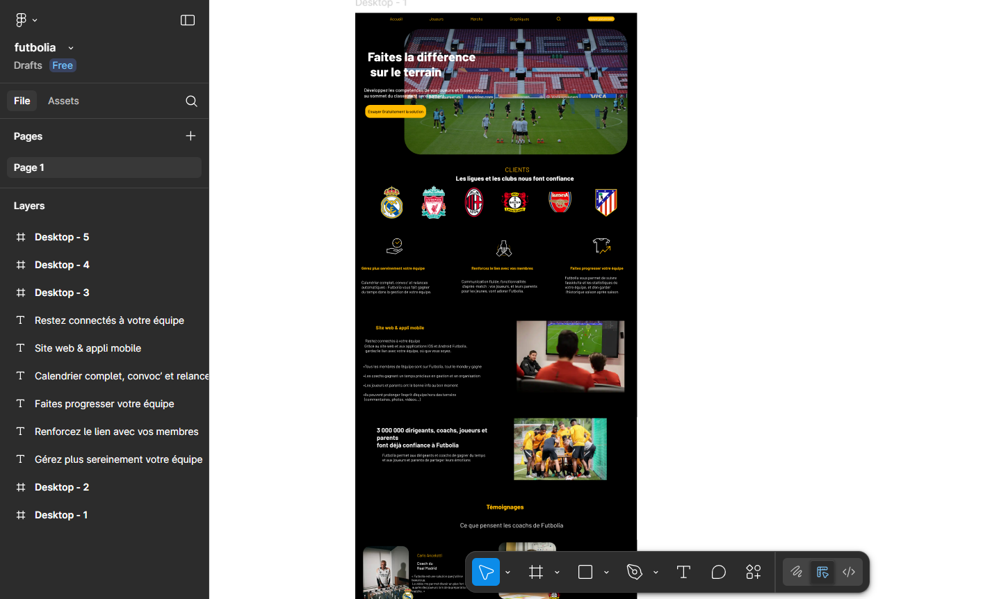

À propos
Je suis actuellement étudiant à ESIC en BTS SIO (Services Informatiques aux Organisations), dans l’option SLAM (Solutions Logicielles et Applications Métiers). Cette spécialisation me permet d’approfondir mes compétences en développement logiciel, conception d’applications et gestion de bases de données.
Toujours en cours de formation , je souhaite à travers ce portfolio partager avec vous mon parcours, mes compétences techniques ainsi que les différents projets académiques que j’ai pu entreprendre jusqu’à présent.
Qu'est ce que le BTS SIO ?
Le Brevet de Technicien Supérieur Services Informatiques aux Organisations (BTS SIO) s’adresse à celles et ceux qui souhaitent se former en deux ans aux métiers de l’informatique, soit dans le développement d’applications, soit dans l’administration des réseaux et des systèmes.
Cette formation permet d’acquérir des compétences techniques et professionnelles solides afin d’intégrer directement le marché du travail ou de poursuivre des études dans le domaine de l’informatique (licence, école d’ingénieurs, etc.).
-
Option SISR
L’option Solutions d’Infrastructure, Systèmes et Réseaux (SISR) forme des professionnels capables de déployer, administrer et sécuriser les réseaux et équipements informatiques d’une organisation.
Les diplômés de cette option sont en mesure de gérer les serveurs, assurer la maintenance et veiller à la sécurité du système d’information.Débouchés possibles :
- Administrateur systèmes et réseaux
- Technicien d’infrastructure
- Informaticien support et déploiement
- Pilote d’exploitation
- Support systèmes et réseaux
- Technicien de production
- Technicien micro et réseaux
-
Option SLAM (Option choisi)
L’option Solutions Logicielles et Applications Métiers (SLAM) forme des spécialistes du développement d’applications adaptées aux besoins des entreprises.
Elle couvre tout le cycle de vie d’un logiciel : analyse des besoins, conception, développement, tests et intégration dans le système d’information.Débouchés possibles :
- Développeur d’applications informatiques
- Développeur web ou mobile
- Analyste programmeur
- Analyste d’applications ou d’études
- Programmeur analyste
- Responsable des services applicatifs
- Technicien d’études informatiques
Certifications
